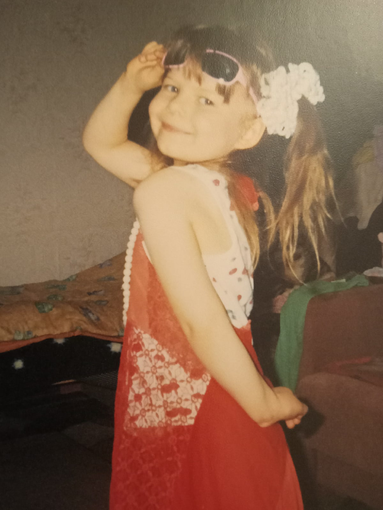
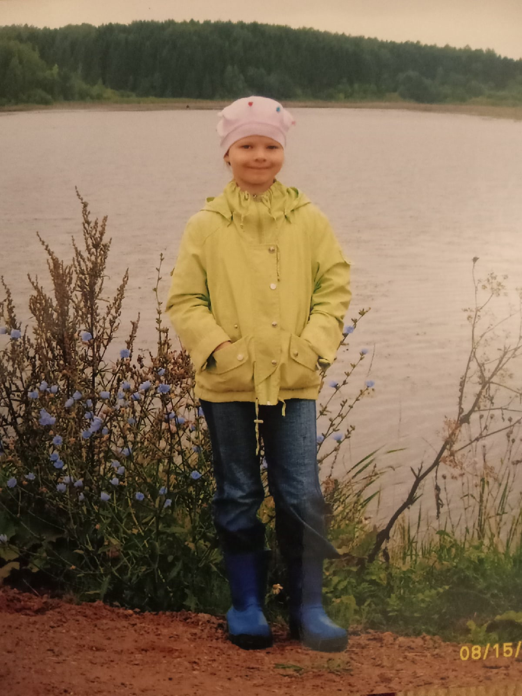

ДЕТСТВО
|

 |
Родилась 8 августа 2002 года в г. Слободском. Детство прошло в д. Денисовы. Там я гуляла и играла с подругам. Моя бабушка работала врачом, и я очень любила проводить время у неё на работе под столом, играя с ненужными бумагами. Занималась восточными танцами. Очень любила рисовать. В 2009 году начала учиться в Лицее №9. |
|
Продолжение→ |